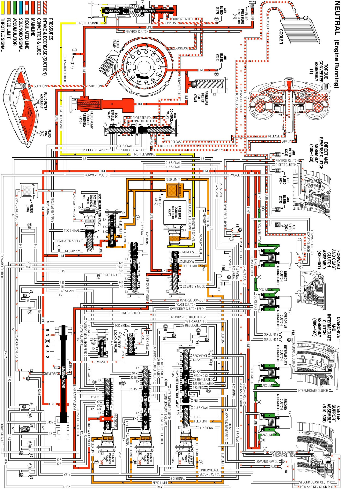

Neutral - Engine Running
Neutral - Engine Running
When the gear selector lever is moved to the Neutral (N) position, the hydraulic and electrical system operation is identical to Park (P) range. However, if Neutral is selected after the vehicle was operating in Reverse (R), the following changes would occur in the hydraulic system:
Reverse Clutch Releases
Manual Valve
- The manual valve is moved to the neutral position and blocks line pressure from entering the reverse fluid circuit. The reverse fluid circuit is opened to an exhaust at the manual valve.
Reverse Clutch
- Reverse clutch fluid exhausts from the reverse clutch to the #1 ball check valve allowing the reverse clutch to release.
#1 Ball Check Valve
- Reverse clutch fluid unseats the #1 ball check valve and enters the reverse lockout fluid circuit. Reverse lockout fluid then flows to the reverse lockout valve where it enters the reverse fluid circuit.
Reverse Lockout Valve
- Reverse lockout fluid passes through the reverse lockout valve and into the reverse fluid circuit and on to the manual valve where it exhausts.
Line Boost Valve
- Reverse clutch fluid exhausts from the line boost valve, allowing line pressure to return to the normal operating range as in Park, Neutral and Overdrive gear ranges.
Low and Reverse Clutch Releases
Important: Allowing fluid to bypass an orifice when exhausting ensures a quick release of the clutch. This prevents the friction material from "dragging" and creating excess fluid temperatures or damaging the clutch.
Important: In Park, Reverse and Neutral the shift solenoid valves are shown de-energized. This is the normal operating state when the vehicle is stationary or at low vehicle speeds. However, the TCM will change the shift solenoid valve states depending on vehicle speed. For example, if Neutral range is selected when the vehicle is operating in Second gear, the shift solenoid valves will remain in a Second gear state. But with the manual valve in Neutral, line pressure is blocked, D432 fluid exhausts and the transmission will shift into Neutral.
Low and Reverse Clutch
- Low and reverse clutch or reverse lockout fluid exhausts from the outer area of the low and reverse clutch piston to the #8 ball check valve. Reverse lockout fluid also exhausts from the inner area of the low and reverse clutch piston through orifice #12. The exhaust of these fluids allows the low and reverse clutch to release.
#8 Ball Check Valve
- Low and reverse clutch or reverse lockout fluid seats the #8 ball check valve against the low and reverse clutch fluid circuit and enters the reverse lockout fluid circuit where it exhausts along with reverse clutch fluid past the manual valve.
Neutral Engine Running
Neutral Engine Running:
